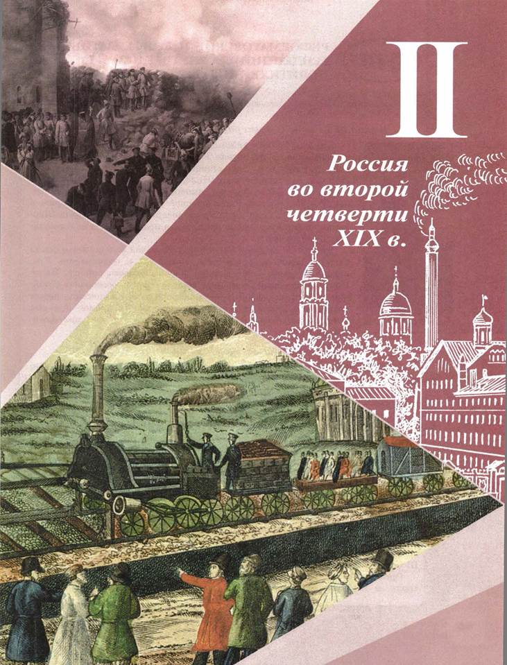
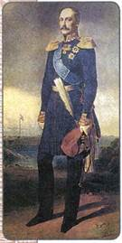
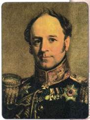
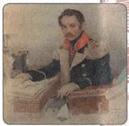
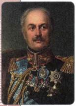

Каковы были главные направления внутренней политики Николая I?
1. Николай I: новый император
Николай (1796—1855) был третьим сыном Павла I. В роли самодержавного правителя России его никто себе не представлял, так как при двух старших братьях вступление на престол было маловероятным. Николая не готовили к управлению страной. Вместе с братом, императором Александром, Николай въезжал во главе победоносной русской армии в Париж в 1814 г. В 1817 г. он женился на дочери прусского короля Шарлотте, получившей после крещения в православие имя Александры Фёдоровны.
В простых людях и чиновниках Николай больше всего ценил исполнительность, покорность, готовность к подчинению. Прекрасно понимая необходимость и неизбежность реформ, Николай стремился тем не менее в первую очередь обеспечить устойчивость существовавших в стране порядков. Из опасения новых потрясений разработка всех реформаторских планов при нём велась в обстановке ещё большей секретности, чем при Александре I.

Николай I
2. Укрепление государственного аппарата
В первые годы правления новый царь стремился поставить под свой контроль все вопросы управления страной, включая самые незначительные. Для этого в 1826 г. был создан особый орган управления — Собственная его императорского величества канцелярия (СЕИВК). Через канцелярию он осуществлял личный контроль над действиями министерств и ведомств. Обширная канцелярия имела несколько отделений, в зависимости от сферы деятельности.
Задачей II отделения канцелярии стало упорядочение законодательства (кодификация законов) и подготовка единого Свода законов. Для этого во главе отделения император поставил возвращённого в 1826 г. из ссылки М. М. Сперанского. Прежде эта работа безуспешно велась в течение десятилетий. Сперанскому удалось выполнить её всего за пять лет. Итогом стало опубликованное в 1830 г. Полное собрание законов Российской империи в 45 томах и изданный в 1832 г. Свод действующих законов Российской империи.
Вопросы политического сыска и выявления входили в ведение III отделения императорской канцелярии. Благодаря широко развернувшемуся преследованию неблагонадёжных лиц, представлявших угрозу правящему режиму, III отделение приобрело широкую известность.
Органы III отделения были созданы и на местах, они осуществляли контроль за настроениями умов. Для наведения нужного властям порядка в распоряжении шефа III отделения находилась и вооружённая сила корпуса жандармов. Шефом III отделения и корпуса жандармов стал облечённый особым доверием царя генерал А. X. Бенкендорф.

А. X. Бенкендорф
Николай стремился усилить централизацию управления, установить всеобъемлющий контроль над всеми областями развития огромной страны. Было увеличено количество государственных ведомств, расширены штаты чиновников, возникла особая прослойка бюрократии.
Бюрократический контроль осуществлялся и за печатью. Николай I поставил её под жёсткий контроль цензуры. Изданный при его личном участии в 1826 г. цензурный устав был метко назван современниками «чугунным», поскольку вводил множество запретов и ограничивал возможности журналистов, писателей, поэтов высказывать антиправительственные мнения. И хотя он был немного смягчён два года спустя, уставом 1828 г., общую ситуацию это не изменило.
После 1847—1848 гг. под влиянием революций, которые сотрясали Европу, Николай ещё более усилил контроль над обществом, опасаясь проникновения «революционной заразы» и в Россию. Прежде всего это могло происходить через печать и систему просвещения и образования, поэтому в их отношении был издан целый ряд запретительных мер. Период 1847—1855 гг. был назван современниками «мрачным семилетием».

Л. В. Дубельт — шеф корпуса жандармов с 1839 по 1856 г.
3. Укрепление опоры самодержавной власти
Николай I уделял большое внимание задаче укрепления дворянского сословия, традиционно являвшегося основной опорой власти. Его беспокоило, что начавшееся ещё при Александре I разорение части дворянства продолжалось. Он попытался укрепить материальное положение высшего сословия. Для этого в 1845 г. был издан указ, изменявший порядок наследования крупных имений, включавших более 400 крестьянских дворов. Они теперь не могли быть раздроблены и передавались в порядке наследования старшему в роде. Был повышен имущественный ценз для участников выборов дворянских органов самоуправления.
Было также введено ограничение на доступ в дворянское сословие лицам из «податных сословий»: в 1832 г. введены звания почётных граждан и потомственных почётных граждан. Почётные граждане приобретали ряд привилегий: освобождались от рекрутской повинности, телесных наказаний, подушной подати. Однако они не имели главной привилегии, свойственной дворянину, — возможности владеть крепостными. По указу 1845 г. потомственное дворянство приобреталось с 5-го класса Табели о рангах, а не с 8-го класса, как ранее.
Как ограничения в наследовании крупных имений, введённые Николаем I, сдерживали процесс обнищания дворянства?
С 1828 г. был издан указ, по которому поступление в средние и высшие учебные заведения объявлялось привилегией только детей дворян и чиновников. Крепостные крестьяне имели возможность обучаться только в приходских училищах с одним классом обучения.
4. Попытки решения крестьянского вопроса
Как и его предшественник на императорском троне, Николай не смог обойти вниманием важнейший вопрос — крестьянский. Он решил начать с преобразований, направленных на улучшение положения государственных крестьян. По его поручению реформу управления государственными крестьянами провёл генерал П. Д. Киселёв — член Госсовета и министр государственных имуществ. Главным пунктом преобразований, осуществлённых в 1837—1841 гг., явилось введение крестьянского самоуправления. В деревнях стали создаваться школы и больницы. Там, где земли не хватало, иногда принималось решение о переселении крестьян на свободные земли в другие районы страны, особенно в восточные. Для того чтобы обезопасить крестьян от неурожая, было решено оставить часть земли на «общественную запашку». На этих участках крестьяне работали сообща и пользовались плодами общего труда. Нередко на таких общественных наделах насильно заставляли сажать картофель. Это было непривычно для русских крестьян и привело в начале 1840-х гг. к «картофельным бунтам».
Реформа Киселёва не могла вызвать симпатий со стороны помещиков, поскольку слишком усилились различия в положении государственных и крепостных крестьян. Недовольство преобразованиями Киселёва показало Николаю, что хоть крепостное право и является злом, но попытки его немедленного устранения грозят протестом со стороны приверженцев крепостничества.
Тем не менее отдельные шаги в этом направлении он предпринял: была запрещена продажа крепостных за долги; запрещалось также разлучать при продаже членов одной семьи.
В 1842 г. был принят указ об обязанных крестьянах. По нему помещикам предоставлялось право по своему желанию освобождать крестьян, заключая с ними договор о предоставлении им земельных наделов в наследственное владение. За это крестьяне обязаны (отсюда и название указа) были выполнять различные повинности в пользу бывших владельцев. Однако этим своим правом помещики не спешили воспользоваться, поскольку большинство из них противились нововведениям и предпочитали жить по старым порядкам. Из 10 млн крепостных до 1855 г. в обязанные крестьяне было переведено чуть менее 25 тыс. душ мужского пола.
В 1847 г. крепостные получили право выкупа на свободу в том случае, если поместье их владельца выставлялось на продажу за долги; в 1848 г. им было предоставлено право покупать незаселённые земли и строения.
Ещё одним крупным шагом Николая в отношении крестьян стала инвентарная реформа 1847—1848 гг. Она была проведена только в западных губерниях, где помещиками были в основном поляки-католики, а их крепостными — православные. Здесь были введены инвентарные правила: были строго определены размеры крестьянских наделов и повинности крестьян в пользу помещиков. Это улучшило положение крепостных, дало им чуть большую свободу, ограничило произвол помещиков.

П. Д. Киселёв
Однако, несмотря на все эти нововведения, система крепостного права в России продолжала сохраняться.
ПОДВЕДЁМ ИТОГИ
Главным направлением внутренней политики Николая I стало укрепление центральной власти, поддержка дворянства, а также борьба против революционной угрозы.
Вопросы и задания для работы с текстом параграфа
1. Какие цели преследовало правительство, создав III отделение императорской канцелярии? 2. Чем занималось II отделение? 3. Объясните, в чём состояла кодификация законов. 4. Почему в правление Николая резко возросла численность чиновников? 5. Какие меры предпринимались с целью контроля за «состоянием умов»? 6. Дайте общую оценку внутренней политики Николая I.
Думаем, сравниваем, размышляем
1. В связи с чем последние годы правления Николая I называют «мрачным семилетием»? 2. Почему в 1840-е гг. были проведены реформы, касавшиеся государственных крестьян и крестьян, живших на западных окраинах страны, а помещичьих крестьян реформы не затронули? Как это сочеталось с политикой укрепления дворянского сословия? 3. Дайте характеристику указа 1842 г. об обязанных крестьянах. Почему, на ваш взгляд, им воспользовалось очень малое число помещиков? 4. Узнайте, используя дополнительные источники информации, какие писатели и журналисты подверглись гонениям цензуры в 1830—1840-е гг. Подготовьте сообщение на эту тему.